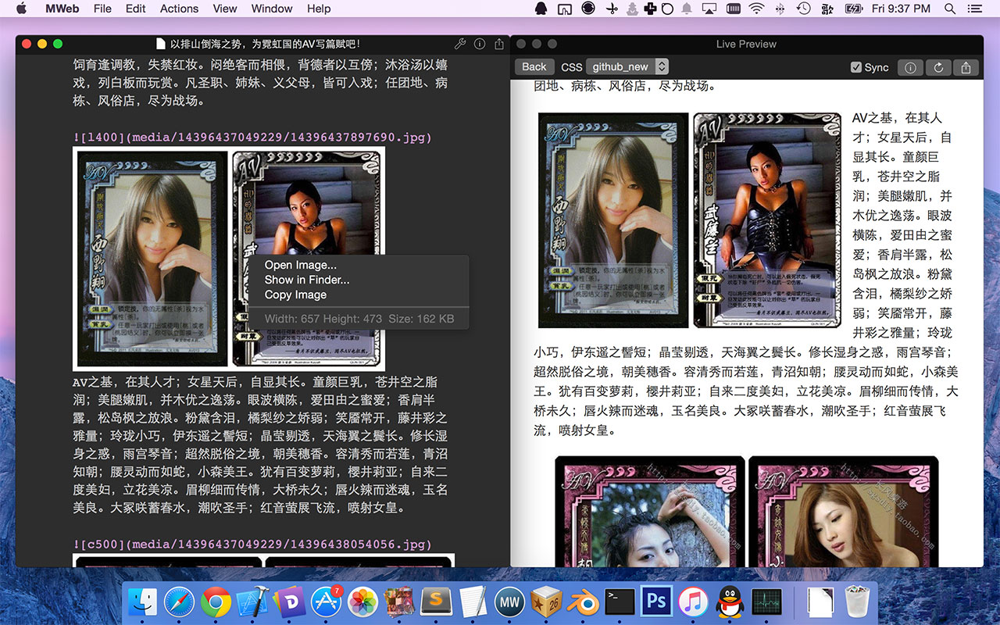
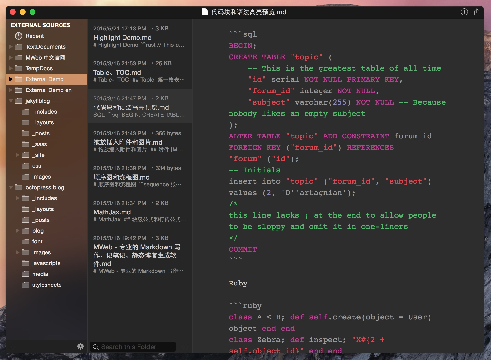
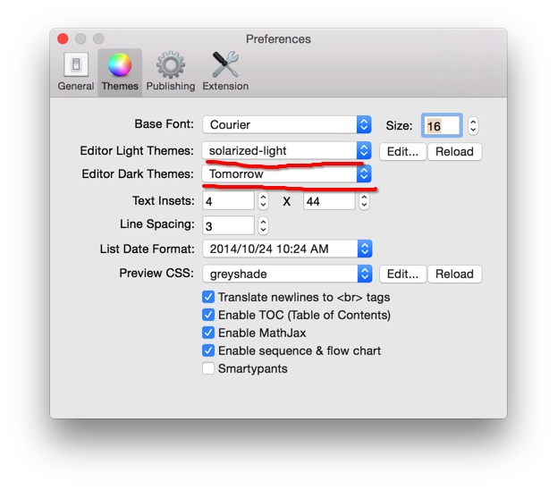
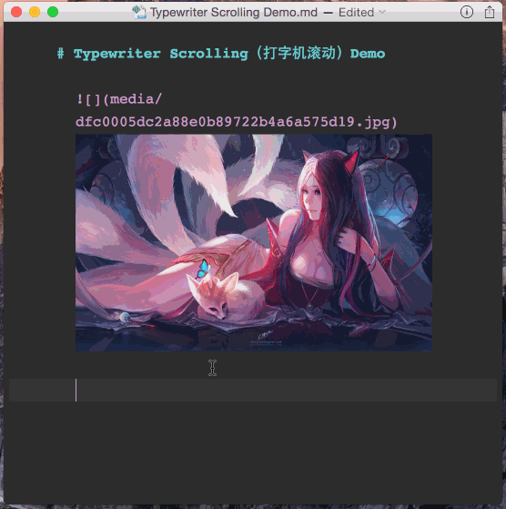

增加设置图片宽度和居左、居右、居中的语法。
如： 这样表示设置图片宽度为 450。其中 -w450 为设置语法，生成 HTML 时会自动移除。w 表示设置宽度，居左为：-l400，居右为 -r400，居中为 -c400，其中前面的 - 为可选，比如设置一图片宽度为 500 并居中：。
编辑器内显示的图片增加了右键菜单，右键图片即可查看图片大小、打开图片、复制图片。

继续阅读 →
使用 View - Dark Mode 或快捷键 CMD + Option + L 开启或关闭 Dark Mode。可以在设置中设置 Dark Mode 状态下编辑器所使用的样式，如下图。

快捷键：CMD + Option + T，菜单：View - Typewriter Scrolling ，效果如下图：

继续阅读 →因为这次发布的功能有点多，所以一开始提交到 MAS 前就写了两篇文章特别介绍了两个重要功能，这次更新主要有：
CMD + E 或者用菜单：View - Open External 打开外部文档模式，点 App 左下脚的 + - Add External Source... 增加文件夹。更多介绍请看提前写好的介绍文章：http://zh.mweb.im/mweb-1.4-add-floder-octpress-support.htmlMWeb 比较有特色的是一键生成静态博客功能，然后从 MWeb 最开始规划要做静态博客生成功能时，我就希望 MWeb 的静态博客生成功能在易用的同时，还要有很强大的扩展性。
比如说能自己增加网站公告，这个公告可以随时更换和取消。再比如说能自己为网站增加广告，而且可以增加多个广告位，google 的或者自定的广告都可以。这些之前都可以通过修改模板解决，但是有些是解决不了的：比如说把文章列表做成像 theverge http://www.theverge.com/reviews 的页的效果，就是列表中有设定的特色图片，有自定的简介，有评分，有价格时会显示价格等。比如说设定 SEO 的一些信息，设定分享到 Facebook 的一些信息。又比如说播客类的网站，要生成 Apple 规格的 RSS。
1.4 版的静态博客增强就是解决这些问题的。我一直考虑如何介绍这个功能，然后因为之前比特新声的主播之一 郝海龙 随意问了一下是否支持生成 Podcast 的 RSS。所以我想来想去，还是介绍用 MWeb 自带的 greyshade 网站模板做一个可以写博客又可以做为播客的新模板好了。
这个新模板的 Demo 网址是：http://coderforart.com/bitvoice/，Podcast RSS 为：http://coderforart.com/bitvoice/podcast-atom.xml。 一般情况下只要到这个网址体验一下，并看一下《音乐《梁祝》及 MWeb 静态博客功能增强的使用体验》这篇文章即可，因为下边的内容是跟自定模板有关。
继续阅读 →